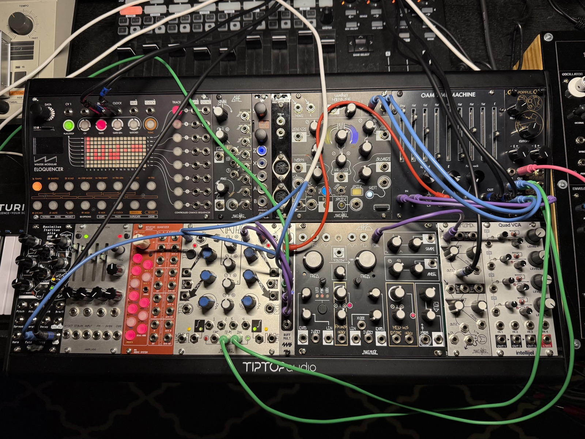

Notes
I finished up the current iteration of my rack with a filter called the Popple from After Later; it's a slight mod of the famous Mutable Instruments Ripples filter. Two-channels with LP2, LP4, and BP outputs, and based on this little experiment it sounds great! This track patches another one of my Juno "heavenly pad" samples from the Morphagene (see the previous track, Well Worn, for more of these) through the Popple filter, with a Maths envelope and its inverse patched in as CV to the cutoff on each channel respectively, then pumped through the OAM Time Machine multi-tap delay to weird things out a little. The whole thing is triggered by a pulse from the Keystep, patched into the Maths input and the BIA to nail it to a kick.
I could definitely add some more interesting drums to this at some point, but as far as exploring the new filter goes this was a good learning experience for sure! Beautiful bright expressive sounds coming out of there.